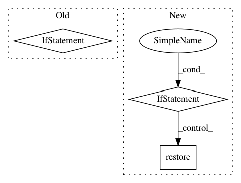

aa35d9115f4cdad559cf7eca77835513367d550e,opennmt/utils/checkpoint.py,Checkpoint,restore,#Checkpoint#Any#Any#,57
Before Change
tf.get_logger().warning("No checkpoint to restore in %s", self._model_dir)
return None
is_v1 = os.path.basename(checkpoint_path).startswith("model")
if is_v1:
_restore_v1_checkpoint(
checkpoint_path,
self._model,
optimizer=self._optimizer if not weights_only else None)
else:
checkpoint.restore(checkpoint_path)
tf.get_logger().info("Restored checkpoint %s", checkpoint_path)
return checkpoint_path
After Change
tf.get_logger().warning("No checkpoint to restore in %s", self._model_dir)
return None
is_v1 = os.path.basename(checkpoint_path).startswith("model")
if is_v1:
tf.get_logger().info("Upgrading V1 checkpoint...")
// Work with copies of model and optimizer as the downstream task might
// need to create the variable differently (e.g. under a distribution
// strategy scope).
tmp_model = copy.deepcopy(self._model)
tmp_optimizer = copy.deepcopy(self._optimizer) if self._optimizer is not None else None
tmp_model.create_variables(optimizer=tmp_optimizer)
step = _restore_v1_checkpoint(
checkpoint_path, tmp_model, optimizer=tmp_optimizer)
// Save an updated checkpoint in the model directory and restore this one instead.
tmp_checkpoint = Checkpoint(
tmp_model, optimizer=tmp_optimizer, model_dir=self._model_dir)
checkpoint_path = tmp_checkpoint.save(step)
return self.restore(checkpoint_path=checkpoint_path, weights_only=weights_only)
checkpoint.restore(checkpoint_path)
tf.get_logger().info("Restored checkpoint %s", checkpoint_path)
return checkpoint_path
In pattern: SUPERPATTERN
Frequency: 3
Non-data size: 3
Instances
Project Name: OpenNMT/OpenNMT-tf
Commit Name: aa35d9115f4cdad559cf7eca77835513367d550e
Time: 2019-07-18
Author: guillaume.klein@systrangroup.com
File Name: opennmt/utils/checkpoint.py
Class Name: Checkpoint
Method Name: restore
Project Name: HyperGAN/HyperGAN
Commit Name: a02275482389c3f741484b15c2618677955f4ada
Time: 2016-06-29
Author: martyn@255bits.com
File Name: directory-gan.py
Class Name:
Method Name:
Project Name: asyml/texar
Commit Name: db19408b9dba8b85a16d9a7b58c5bb366d600c7c
Time: 2018-04-26
Author: shore@pku.edu.cn
File Name: examples/transformer/transformer_overall.py
Class Name:
Method Name: